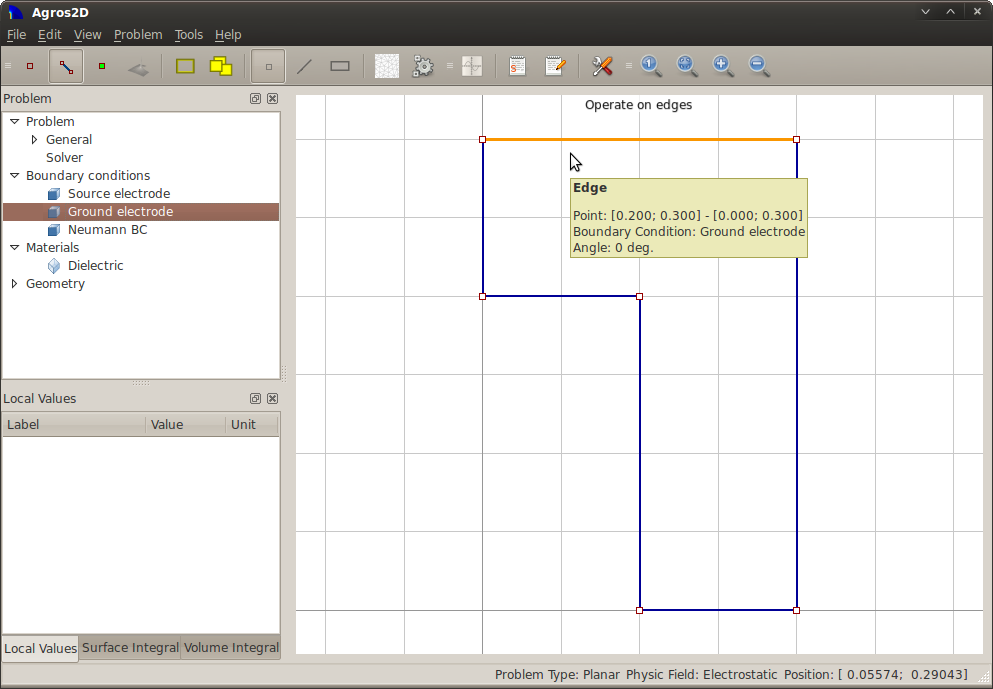

This example demonstrates the basics of working with Agros2D. The resulting model can be found /data/electrostatic_planar_capacitor.a2d.
Capacitor is a passive electrical component. It consists of electrodes that are separated between dieletric and have a different electrical potential. It is used to store electric charge. The basic type of the capacitor is a plate capacitor.
For more information visit http://en.wikipedia.org/wiki/Capacitor.
Select "New" in the menu "File", or in main toolbar and enter "Problem properties".

Select "Operate on nodes" in the "Problem" menu, or in main toolbar and place 6 points with coordinates [0.1, 0.0], [0.2, 0.0], [0.0, 0.2], [0.0, 0.3], [0.1, 0.2] and [0.2, 0.3]. You can move mouse to requested place and press left button together with <Ctrl> key, or by pressing <Alt>+N and entering the nodes coordinates.
Select "Operate on edges" in the "Problem" menu, or in main toolbar and draw 6 edges according to definition area. Press <Ctrl> key and select in sequence start and end node of the line, or by pressing <Alt>+E and these point select from offer.
Select "Operate on labels" in menu "Problem", or in main toolbar and place block label into inner area. To place label you can use left mouse button together with <Ctrl> key or pressing <Alt>+L and entering the label point coordinates.
Select "New boundary condition" from the menu "Problem", or press <Alt>+B and gradually define three BC, which are described in chapter Problem analysis.
Select "New material" from the menu "Problem", or press <Alt>+M and define dieletric material embedded between the electrodes.
Select "Mesh area" from the menu "Problem", or main toolbar.
Select "Solve problem" from the menu "Problem", or main toolbar.
Select "Volume integrals" from the main toolbar and mark area "Dieletric". In subwindow "Volume integral" find value of "Energy" in group "Electostatic field".

Capacity of the capacitor can be calculated according to formula
We = 4 × 1/2 × CU2,
which can be adjusted to shape
C = 4 × 2 × We/U2.